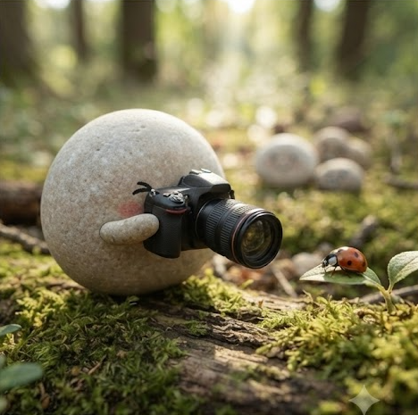
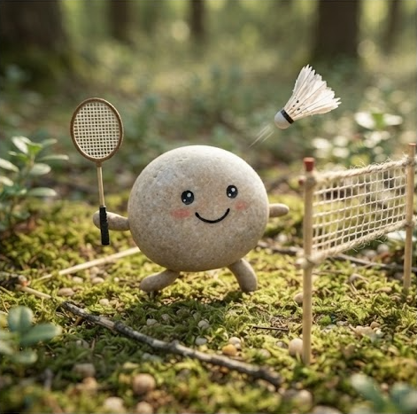

배우는 속도보다,
배운 것을 쌓는 방식을 고민합니다.
데이터와 사람 사이에서 답을 찾아가는 과정을 좋아하는 AI/AX 엔지니어 과정 수강생입니다. 아래에서 저를 소개합니다.
소개
안녕하세요, AI/AX 엔지니어 과정을 수강하고 있는 [이름]입니다. 새로운 기술을 눈으로 익히는 것보다 직접 손으로 만들어보며 이해하는 편을 좋아해서, 강의를 들은 뒤에는 항상 작은 실습이나 토이 프로젝트로 옮겨보려고 합니다.
데이터 안에 숨어 있는 패턴을 찾아내고, 그 패턴이 실제로 쓸모 있는 서비스나 기능으로 이어지는 과정에 큰 흥미를 느낍니다. 아직 배워야 할 것이 많은 단계이지만, 하나씩 이해하고 쌓아가는 과정 자체를 즐기는 사람입니다.
취미

사진찍기
일상 속 순간을 프레임 안에 담는 걸 좋아합니다. 빛과 구도를 관찰하고 원하는 장면이 나올 때까지 각도를 바꿔보는 과정이, 데이터를 이리저리 살펴보며 원하는 인사이트를 찾는 과정과 닮아 있다고 느낄 때가 많습니다.

배드민턴
빠른 판단과 순발력이 필요한 운동이라 스트레스 해소에도 좋고, 팀을 이뤄 복식 경기를 할 때는 상대의 다음 동작을 읽고 대응하는 재미가 있습니다. 꾸준히 치다 보니 체력 관리와 집중력 유지에도 큰 도움이 됩니다.
수업 포부
기초부터 단단하게
AI/AX의 핵심 개념과 도구를 급하게 넘어가지 않고, 원리를 이해한 뒤 다음 단계로 넘어가는 방식으로 학습하고 싶습니다. 이해가 부족한 부분은 바로바로 질문하고 정리하는 습관을 들이려 합니다.
직접 만들어보며 배우기
배운 내용을 그대로 두지 않고, 작은 프로젝트나 실습으로 옮겨 결과물을 만들어보고 싶습니다. 과정이 끝날 때쯤에는 제 손으로 완성한 포트폴리오를 가지고 있는 것이 목표입니다.
함께 성장하는 동료 되기
같은 과정을 듣는 동료들과 서로 배운 것을 나누고, 막히는 부분은 함께 고민하며 풀어가고 싶습니다. 혼자 빨리 가기보다 함께 멀리 가는 학습을 지향합니다.